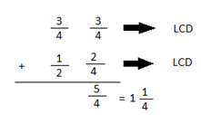
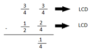

Explore and Discover!
Explore and Discover!
Lisa bought 3/4 kilogram of lanzones and 1/2 kg of apples. How many kg of fruits did she buy in all? How many more kg of lanzones than apple did she buy?
How will you answer the questions in the problem? To answer the first question, add 3/4 and 1/2.
The number sentence is: 3/4 + 1/2 = n
You can find the answer by using regions or illustration. One whole chocolate bar is represented by one strip.
• Change 3/4 and 1/2 to similar fractions by finding the Least Common Denominator or LCM of 2 and 4.
• Add the numerators.
• Write the sum over at least common denominator.
• Write the answer as a mixed number if it is an improper fraction.
Answer: Liza bought 11/4kg of fruits in all.
To find the answer to the second question in the problem, subtract 1/2 from 3/4
The number sentence is: 3/4 - 1/2 = n
• Change 3/4 and 1/2 to similar fractions by finding the LCD of 2 and 4.
• Subtract the numerators.
• Write the difference over the least common denominator.
Answer: Liza bought 1/4kg more lanzones thatn apples.
Let's Practice!Find the sum or difference.
5/8 + 1/2 = 9/8 or 11/8
3/4 + 1/3 = 13/12 or 11/12
6/9 + 2/3 = 12/9 or 11/3
5/6 - 1/4 = 7/12
3/5 + 1/2 = 11/10 or 11/10
9/10 - 2/5 = 1/2
4/5 - 1/2 = 3/10
9/12 - 3/6 = 1/4